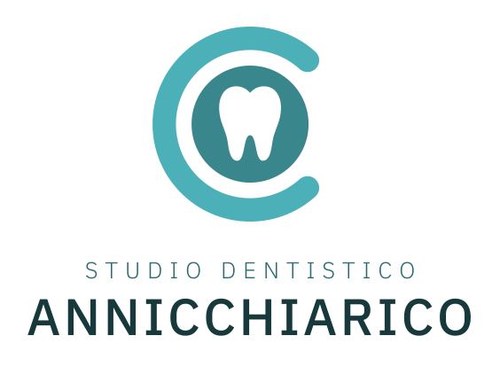
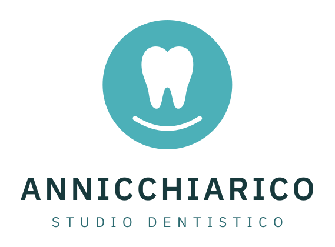

Studio Dentistico Annicchiarico: proposte logo
01. C e dente
Evoluzione del logo attuale: la C e il cerchio restano, al posto dell'impianto c'è il dente intero.

02. Dente a linea
Contorno leggero e nome in serif: il registro più elegante.
03. Monogramma
La A di Annicchiarico dentro il dente, pieno e scuro: si riconosce anche molto piccolo.
04. Sorriso
Badge rotondo con dente e sorriso, impaginazione verticale per insegne e social.

05. Blu e menta
Palette alternativa: tile blu notte con dente menta, pensato anche come icona.
06. Una riga
Dente bicolore e nome su una sola riga: per header del sito, carta intestata e spazi stretti.